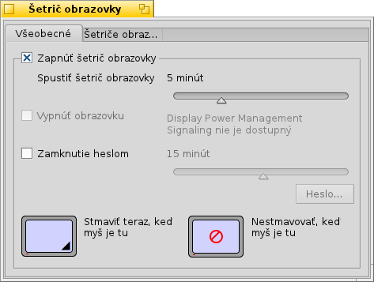
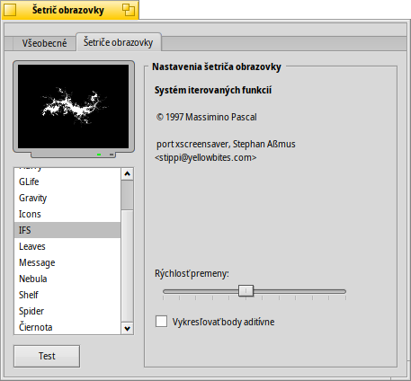

Slovenčina
Slovenčina Català
Català Deutsch
Deutsch English
English Español
Español Français
Français Italiano
Italiano Magyar
Magyar Polski
Polski Português
Português Português (Brazil)
Português (Brazil) Română
Română Suomi
Suomi Svenska
Svenska 中文 ［中文］
中文 ［中文］ Русский
Русский Українська
Українська 日本語
日本語 Šetrič obrazovky
Šetrič obrazovky
| Panel: | ||
| Umiestnenie: | /boot/system/preferences/Screensaver | |
| Nastavenia: | ~/config/settings/ScreenSaver_settings |
Panel nastavení Šetriča obrazovky je rozdelený do dvoch kariet:
 Stmievanie
Stmievanie

Horným zaškrtávacím políčkom môžete zapnúť/vypnúť šetrič obrazovky.
Posuvníkom pod tým nastavujete, po koľkých minútach nečinnosti sa má šetrič spustiť.
Ďalšie dva posuvníky sa dajú použiť iba vtedy, keď aktivujete ich zaškrtávacie políčka:
Prvý posuvník určuje, po koľkých minútach sa má vypnúť obrazovka.
Druhý určuje, po koľkých minútach bude treba zadať heslo na odomknutie počítača.
Kliknutím do rôznych rohov dvoch obrazoviek dole určujete, kedy má systém okamžite spustiť šetrič alebo kedy ho spustiť nemá v prípade, že na danom mieste necháte kurzor myši. Kliknutím do stredu týchto obrazoviek ich funkcie deaktivujete.
Šetriče obrazovky

Druhá karta zobrazuje zoznam všetkých nainštalovaných šetričov obrazovky a ich individuálne nastavenia. Otestovať vaše nastavenia môžete tlačidlom pod zoznamom Ďalšie šetriče obrazovky, ktoré sa nedodávajú vo forme obyčajného balíka .hpkg, môžete nainštalovať aj skopírovaním do príslušného priečinka mimo balíka (non-packaged) (pozri tému Rozloženie súborového systému).
| /boot/system/non-packaged/add-ons/Screen Savers/ | šetriče obrazovky dostupné všetkým používateľom. | |
| /boot/home/config/non-packaged/add-ons/Screen Savers/ | šetriče obrazovky dostupné iba vám. |